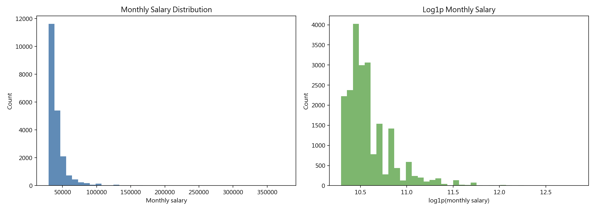
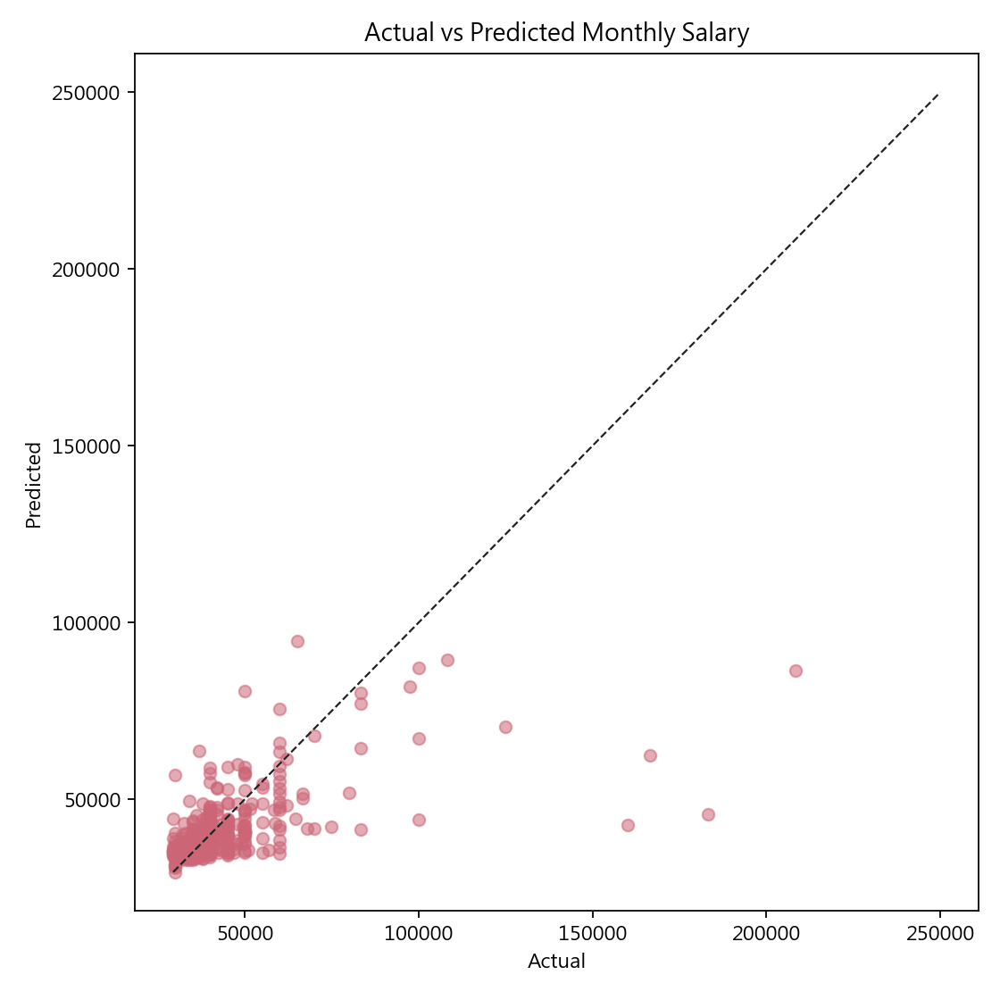
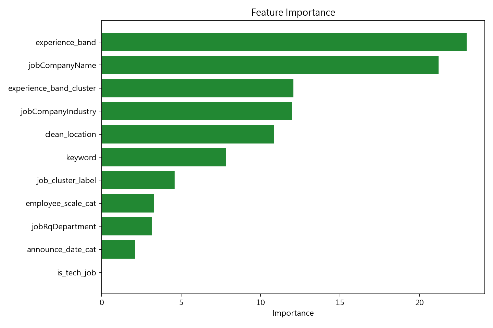
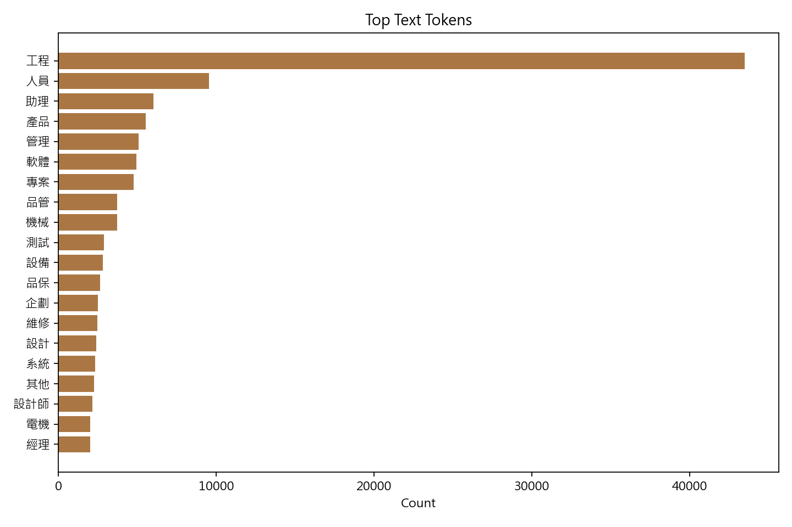

薪資預測工作台
catboost_min Salary Model Report
MAE5,785.33
RMSE10,691.20
R20.4456
MAPE12.03%
Error <= 25%88.83%
Best Parameters
{'loss_function': 'MAE', 'thread_count': 1, 'allow_writing_files': False, 'verbose': 0, 'depth': 6, 'learning_rate': 0.1, 'iterations': 120, 'random_seed': 42}
catboost_min_salary_distribution

catboost_min_prediction_comparison

catboost_min_feature_importance

catboost_min_top_tokens
